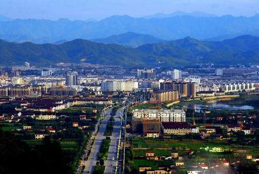
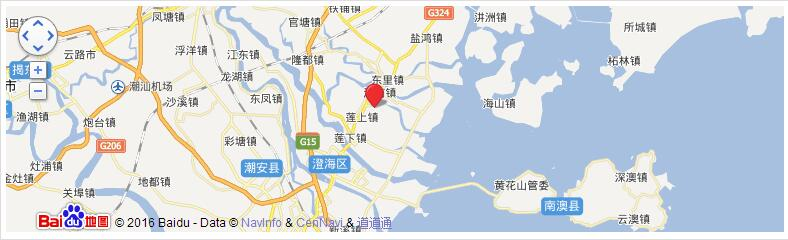

澄海简介

澄海（Tenhigh），澄海区是广东省汕头市辖区，位于广东省东部、韩江三角洲出海口，东北接潮州市饶平县，西北界潮州市，西南毗邻汕头市龙湖区，东南与南澳县隔海相望，地理坐标为东经116°41′—116°54′，北纬d23°23′—23°38′，东西宽22公里，南北长27.85公里，总面积378.35平方公里。我当时说的是是第三代是是多少是多少大苏打实打实的sdsdsdsdsdsdsdsdsdsdsdsdsdsdsdssdwdwdffdsfsfdsffdsfdfdsf都是发地方奋斗fsdfds都是房贷首付都是发士大夫sdf收到发士大夫都是发都是房贷首付的fdfdfdffdsfdsfdsf都是发
截至2011年底，澄海区辖8个镇、3个街道，户籍人口751149人，以汉族为主，少数民族共43个，以壮族、苗族、布依族为多。历来是粤东、闽西南和赣南一带的重要交通枢纽，素有“粤东门户”之称[1] 。2011年，澄海区完成地区生产总值（GDP）280.33亿元，比2010年增长13.2%。
| 中文名称 |
澄海区 |
面积 |
378.35平方公里 |
| 外文名称 |
Tenhigh |
人口 |
80万（2011年常住） |
| 行政区类别 |
市辖区 |
方言 |
潮州话-澄海话 |
| 所属地区 |
广东省汕头市 |
气候条件 |
南亚热带季风气候 |
| 下辖地区 |
8个镇、3个街道 |
著名景点 |
塔山风景区、樟林古港、秦牧故居等 |
| 政府驻地 |
澄华街道文冠路 |
机场 |
揭阳潮汕国际机场 |
| 电话区号 |
0754 |
火车站 |
潮州潮汕站，饶平站 |
| 邮政区码 |
515800 |
车牌代码 |
粤D |
| 地理位置 |
广东省东南部 |
行政代码 |
440515 |
行政区划
澄海区辖8个镇（东里镇、盐鸿镇、莲华镇、溪南镇、隆都镇、莲上镇、莲下镇、上华镇）、3个街道（凤翔街道、澄华街道、广益街道），共137个村、45个社区。
地理环境
澄海区位于广东省东部、韩江三角洲出海口，东北接潮州市饶平县，西北界潮州市，西南毗邻汕头市龙湖区，东南与南澳县隔海相望。地理坐标为东经116°41′—116°54′，北纬23°23′—23°38′，东西宽22公里，南北长27.85公里，总面积378.35平方公里。
